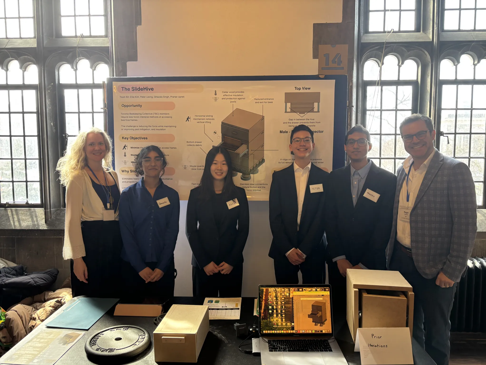
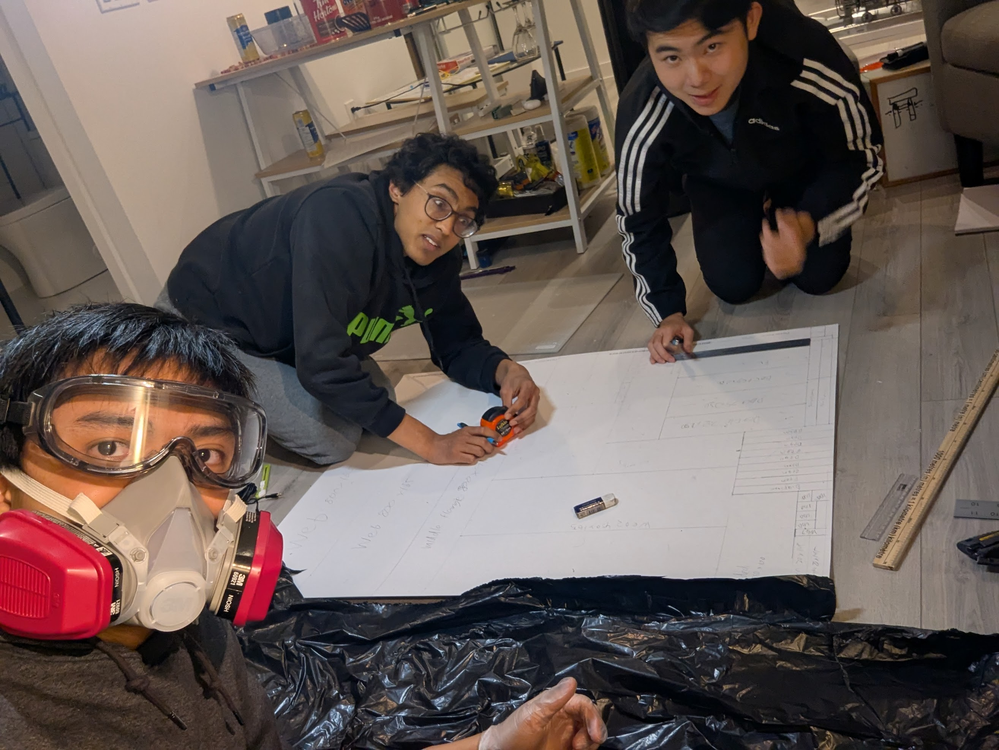
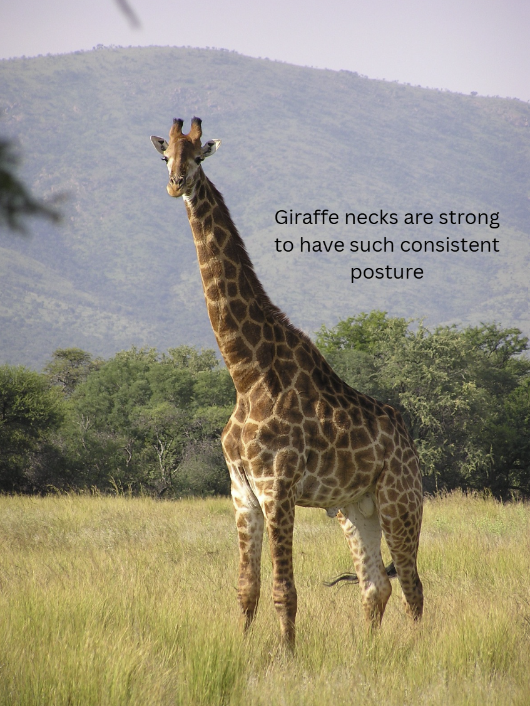

An Engineering Design Portfolio
Intro My Position Praxis II CIV Bridge Project Praxis I Conclusion
Foreword
 Me and my dog Milo
Me and my dog Milo
This portfolio summarizes my approach to engineering design with examples from my first year of engineering at the University of Toronto. I cover:
- an improved beehive made for Praxis II
- a matboard bridge for CIV102
- back posture corrector made for Praxis I
- small miscellaneous projects where I applied my learnings from Praxis I and II
in addition to my position on engineering design.
Thanks!
Pranav Upreti
This website was made using Tufte-CSS. This website is best viewed on a Desktop.
My Position
Engineering design is the process of analyzing a problem that affects stakeholders, and designing and building a solution to this problem. The solution ideally addresses all stakeholder concerns. The premise of "good" and "great" is subjectiveI consider a "bad" design to be one that does not meet key stakeholder concerns . I believe that in addition to meeting stakeholder requirements like good designs, a great design is friendly to useA friendly design invites the user to use it. . For example, the primary requirement for a smartphone is to make calls. You can make a phone with sharp edges and it meets all requirements, but it is uncomfortable to hold. A great design rounds the edges of the phone and is comfortable to hold.
My engineering design process is guided by my values of attention to detail and curiosity.
Attention to detail
I value spending (sometimes excessive) time on every small detail. This value originates from my parents who do the same, and usually leads to a high quality final product. However, I found this to be counterproductive to the engineering design process especially while diverging. The goal of diverging is to generate as many ideas to broadly explore the design space. Prototypes are meant to be low-fidelity, and my attention to detail sometimes meant I spent too much energy on ideas that ended up being scrapped. I am learning that scrappy work is permissible for early stages of the design process, where the goal is to broadly explore the solution space to an engineering problem.
Curiosity
I think I can learn anything, and nothing is too hard if someone else has done it before (even if, learning something is indeed hard). This generally means I am open to learning things outside my proximal zone of developmentProximal zone of development describes a task that is just beyond someone's current abilities. It was introduced in Praxis II and approach engineering tasks where I have no expertise in. This also means I may fail when attempting certain engineering tasks because I do not know where to start working.
In my experience, these values have helped me be an unconventional thinker that can help push out ideas. I used to be afraid to share these ideas because I thought they were silly and did not want to waste my team's time. I am more open to sharing now that I realize (i) laughing at my silly designs is nothing to be afraid of (in fact, in can be fun!) and (ii) seemingly silly ideas may be worth pursuing.
Designing an Accessible Beehive
Our Praxis team with Professors Lofgreen and Carrick. Left to right: Professor Lofgreen, Ghazala Singh, Ellie Kim, Peter Leong, me, and Professor Carrick
Peter Leong, Ghazala Singh, Ellie Kim, and I decided to design a more accessible beehive for the Toronto Beekeepers Collective. Currently, they use Langstroth hives which require lifting heavy 40-kg boxes in order to access the frames containing honey. This can lead to injury. Our goal was to reduce the force required to access frames of honey. Our solution is drawer-style hive that uses male-female drawer slide connection. We could not use traditional drawer slides since bees secrete a glue-like substance, called propolis, which would clog drawer slides. Hence, our design avoids having gaps bees can propolize and is summarized below.
Pairwise comparison
Pairwise comparison is used to compare every pairing of things (i.e. requirements or designs) to find their relative importance. We used pairwise comparison to determine our most important evaluation criteria; our RFPRequest for Proposals (RFPs) were documents that outlined an opportunity, requirements, and evaluation criteria. contained 27 evaluation criteria and pairwise comparison was a systematic way to determine the most important evaluation criteria.
I learned that taking a systematic approach in ranking prototypes, requirements, or evaluation criteria is more rigorous than debating them on whim. I also learned that in making a 729 cell comparison chart, I zoned in on our key requirements and forgot about the rest. Moving forward, I would benefit from summarizing how each evaluation criteria compares to others.
Measurement matrix
Measurement matrices provide a big-picture view of all your designs. They help to quantify how good your design is compared to others.
We used a measurement matrix to compare each of our prototypes against specific evaluation criteria. We performed many simulations and force tests so it was helpful to see all the results in one table. I learned that engineering judgement is critical to making decisions. For instance, our measurement matrix showed the spiral design and improved topbar design required the minimum force to operate. We still went with the SlideHive, which took almost triple the force to operate, because it was a much simpler design. Although we had other designs which were more innovative, simplicity took precedence because we wanted our community to make minimal modifications to their current setup. In hindsight, simplicity could have been added as an additional column in our measurement matrix. I am not sure how to quantify simplicity - maybe the number of modification to their existing design? Hence, I still believe engineering judgement is a key consideration for measurement matrices.
Proxy testing
We used thermal simulations to test how well our beehives are insulated since we had custom CAD models and little available secondary research.
The simulation was done in Simscale. Initially we had a problem where our simulation showed the hive at a constant temperature.
My team member Ellie figured out how to account for the bees giving off heat inside the hive. She also did research to figure out how the bee's internal temperature would propagate inside the hive, and found at what temperatures they thrive at through secondary research. These were small details we could have faked but the attention to detail of our team meant we were able to elaborate on it during Showcase.
I learned that simulation is not as simple as inputting your CAD model into a program and getting results. It requires an understanding the conditions your CAD model will be placed in, which means thorough secondary research. This connects to my value of attention to detail, since we needed to account for small details like the bee heat propagating from the frames to generate accurate thermal simulations.
CIV102 Bridge Design Project
The description, design process, and parts of the CTMFs were written in collaboration with my group members Jadon Tsai and Jeffery Tian.
We were tasked with designing and building a bridge that could support a moving train weighing at least 400 N using a fixed amount of matboard and contact cement. If the bridge could withstand the initial 400 N weight, the train would be loaded further, such that the first and last freight cars would weigh more than the central car. The required final length of the bridge was longer than the matboard we were given, so we were required to connect at least two different pieces of matboard using a splice connection to make the bridge long enough.
Summary of Design Process: We felt the bridge design challenge would be optimizing its cross-section to be the strongest. We came to this conclusion after multiple rounds of diverging where we explored bridge designs like arches and realized that a simple beam would be the most feasible given our material quantity and type (matboard). To optimize the design of our beam, we performed failure calculations with cross-sections of different dimensions. The most common failure modes were in compression, shear failure at the glue joint of the splice connection, and shear buckling of the entire bridge. In the end, we settled on a pi girder cross-section design with a flange glued near the top of the design. While this design made our bridge very strong against compression failure, it came at the cost of using smaller stiffeners instead of full-size diaphragms, which were less effective at preventing shear buckling. Further, we neglected the importance of strong glue tabs when designing the bridge. Our glue tabs were designed to be 5 mm, in practice ended up being closer to 2 mm since the matboard bending took up glue tab width. Further, the glue tabs were never flat; there were always gaps between two glued pieces. While our bridge could theoretically survive loads of up to 1.3 kN, in practice, it could not withstand the initial 400 N train.
Simulation for quick iterative design
My group member Jeffery Tian wrote most of the code that calculates the internal stresses of the bridge at every point along its deck.
change imageThe measurement matrix we used to compare all our designs at once.
We went through ten major design iterations, adjusting the cross-sectional geometry to identify the optimal configuration. Simulations were our main iteration tool.
Our design iterations focussed on changing the cross-section because it was simple, fast to simulate, and easy to build. In hindsight, we could have simulated variable cross-sections to explore the design space better. Interestingly, the discrepancy between simulation results and our bridge performance suggests we should incorporate physical design iterations too. This means constructing short spans of the bridge with scrap material and comparing our simulated results to the actual bridge performance. Iterating like this would have given us construction experience and intuition, so we would have, for example, known to use larger glue tabs in our final design.
Unfortunately, the easiest way to gain engineering intuition is through failures. We spent disproportionate time in the development stage, optimizing geometry without revalidating the ability to construct it. By simulating hybrid or variable cross-sections, we could have optimized for different load regions (e.g., thicker sections at splice joints).
Sketching prototypes
Sketching was important for us to quickly diverge. Since we wanted to explore a broad design space, we needed to quickly filter out unfeasible designs. It would be impractical to create high fidelity CAD models or run our simulation on every design (because the setting the simulation takes time), so sketches helped us quickly visualize ideas.
I enjoyed making sketches because it was fun. I found working with highly motivated and talented individuals to be intellectually stimulating and worth the time. My group members were much smarter than me, so I learned a lot about structural design from them and reinforced my fundamentals in structural analysis. Creating quick sketches with my group also ensured we had the same expectations of the bridge requirements, our target load-till-failure, and time frame to build it. I will use sketching on every engineering projects because it is quick and fun.
Psychological safety
Working on the bridge together with my team. Left to right: Jadon Tsai, me, Jeffery Tian.
Psychological safety is when each member in a team feels safe to voice their opinions and is an indication of a strong team. Specifically, psychological safety means a team engages in healthy arguments and are not afraid of appearing silly, learning from each other, and making mistakes. This connects to my value of curiosity during engineering design since I am comfortable asking silly questions and learning from my group.
Incubating psychological safety is important to better design since weaknesses are pointed out without hurting the team dynamics. I felt comfortable working in this team, making mistakes, and sharing silly ideas. It made me feel free, learn skills like how to properly calculate second moments of areas (although my exam will make me say otherwise) and contribute to group coding. It is clear that the best progress is from teams that feel safe around each other.
Improving EngSci Back Posture
The description, design process, and parts of the CTMFs were written in collaboration with my group members Ines de Uriarte Alvarez de Espejo, Jadon Tsai, and Aarya Shah.
We set out to improve the back posture of first year Engineering Science students.
Pugh chart
Pugh charts help rank candidate designs against each other. One design is set as a reference, and all other designs are ranked as better, worse, or the same based on a list of evaluation criteria. This process is repeated for different designs as references, and a score for each design is found by adding the rankings from every step.
Our pugh chart ranked our designs against the pokey belt design.
Pugh charts were helpful for us Pugh charts can be helpful to quickly filter out designs that perform poorly compared to others. However, it comes down to engineering judgement to decide the top design. yaada yada yay yay engineering intuition, there are other things other than thingy requirements you need to consider, namely ease of building, a bit of intuition.
Brainwriting
Brainwriting is a brainstorming tool where each individual sketches for two minutes, then sketches on someone else's sketch, and repeats until you have drawn on every one's sketches. There is no talking while sketching, but there is discussion once everyone is done.
Brainwriting was my favourite diverging tool since it was efficient. My Praxis I group was perhaps on the talkative side, so forcing quiet sketching time helped us focus. Additionally, we generated the most and best ideas using this tool. We could not always understand what the previous person wrote, so we had little anchoring bias on what the sketch is supposed to be. This helped us be creative by thinking beyond what was obvious.
I learned that talking is not necessary for thorough diverging. I am someone who gets drained from talking too much, so I found it helpful to use brainwriting to generate ideas without getting drained immediately.
Biomimicry
A giraffe has strong neck muscles to maintain neck posture. Image retrieved from Simple Wikipedia [1] “Giraffe,” Wikipedia, https://simple.wikipedia.org/wiki/Giraffe (accessed Apr. 11, 2025).
Biomimicry draws inspiration from nature to solve engineering design problems. The goal of biomimicry is to broaden the design space by thinking unconventionally. I thought it would not be particularly helpful since our goal was to improve back posture, and animals in nature usually do not have bad posture from my understanding.
A neat observation my group member Aarya got from biomimicry was that giraffes have good posture and strong muscles - that prompted us to look into strengthening back muscles to improve posture.
My takeaway from using biomimicry is that having a cross-disciplinary understanding of everything helps think broadly. This is beneficial for diverging where your goals is to explore every idea in a design space. I also learned to go outside moreIn common parlance, touch grass, because there is so much to learn from nature.
Perry model
The Perry Model in engineering describes how students transition from treating sources as absolute truth to acknowledging bias and validity in sources. I already had an understanding of this coming into Praxis I and learned the nuances of becoming an *integrated authority*. We each have our ideas and values. I had to compromise ideas I thought were excellent and at times my values because I was not working alone. For example, I believed using a sensor system was by far the best way to approach fixing back posture. I also thought it would be relatively simple to implement. I had to accept the faults of this design (namely reliability and technical complexity) and help further our agreed design. By doing so, I reduced bias to my preferred design and we were able to deliver a high quality final product. In summary, I learned to merge my individual ideas with that of our team, so become an integrated authority.
Conclusion
Towards the beginning of my engineering design journey, most of my observations are on diverging tools (i.e. iterative design and diverging tools). Towards the end, most of my observations were on converging tools. It seems as I am becoming more familiar with engineering design, my focus is more on selecting the best design; generating ideas is not an issue, especially in group settings.
As a next step, I need to focus on treating engineering design more like a cycle. This is perhaps primarily due to time constraints on assignments this year, but I noticed we frequently did framing, converging, diverging, and representing in noncyclic chunks. Being more open to cycling between stages of the FDCR process will be beneficial moving forward. After all, a design is never complete.